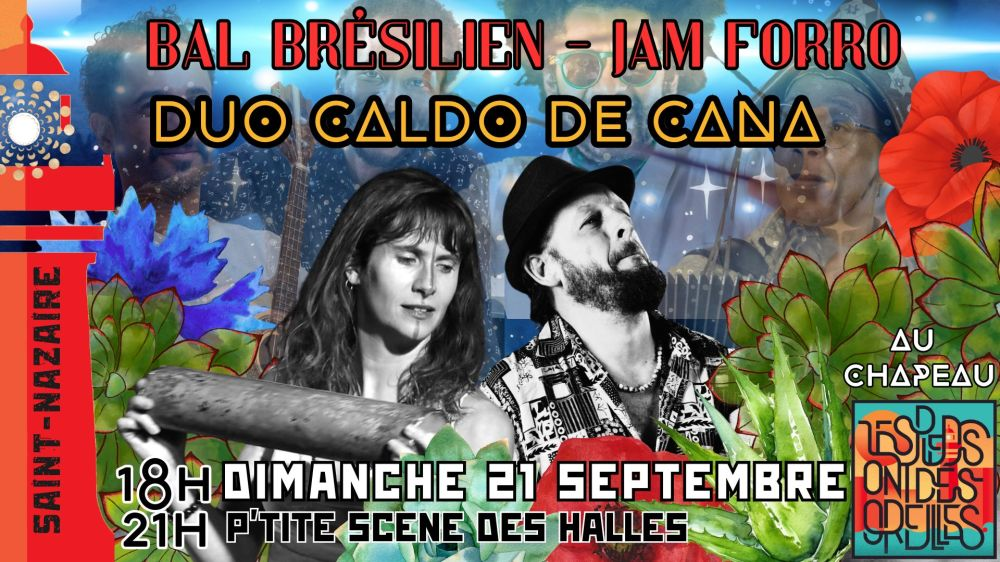

Bal-Concert-Jam avec Duo Caldo de Cana et invités brésiliens

Le lendemain du concert à L’R du Temps avec Alex Corrente et Lino De França, on profite de la présence de nos musiciens pour terminer le week-end en JAM SESSION.
Concert du samedi:
https://www.facebook.com/events/1922770871840391/
En première partie, DUO CALDO DE CANA (Léo Corrêa et Amélie Dalibert) 18-19h
Suivie de la JAM de 19h à 21h.
Si vous souhaitez participer à la musique de la Jam Session, merci de nous faire signe !!
Concert au chapeau (entre 5 et 10€ conseillé).
lespiedsontdesoreilles@gmail.com
07 63 47 55 85